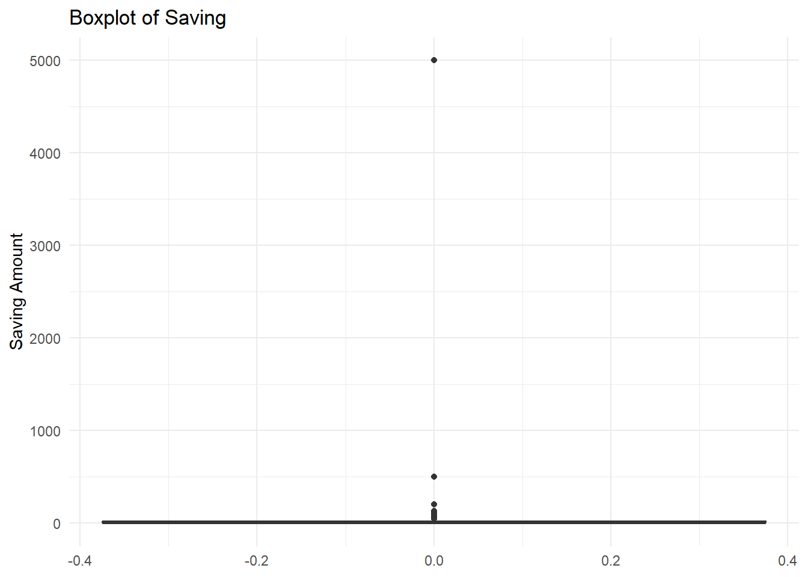
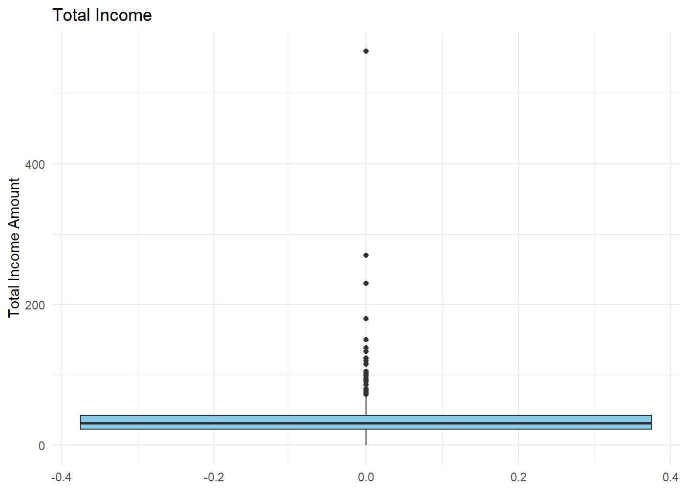
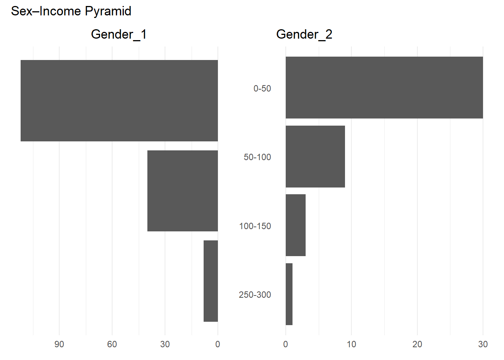
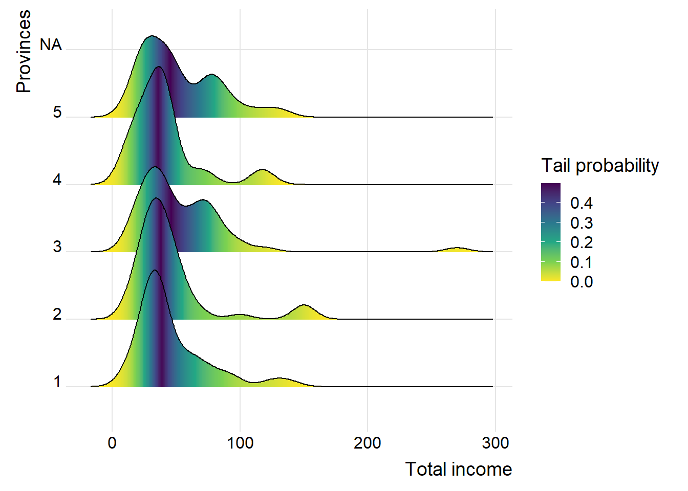
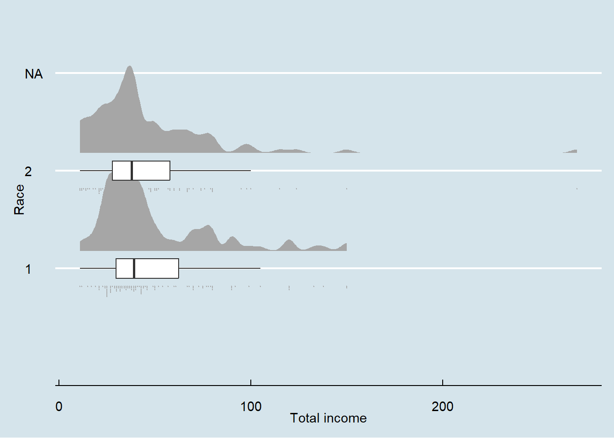
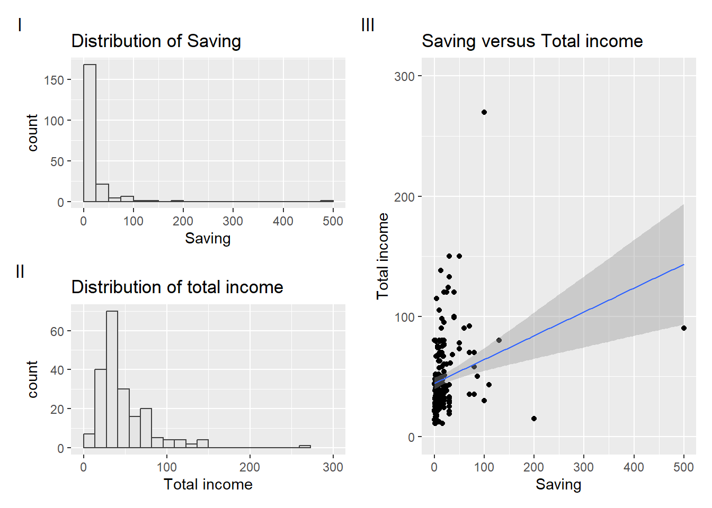
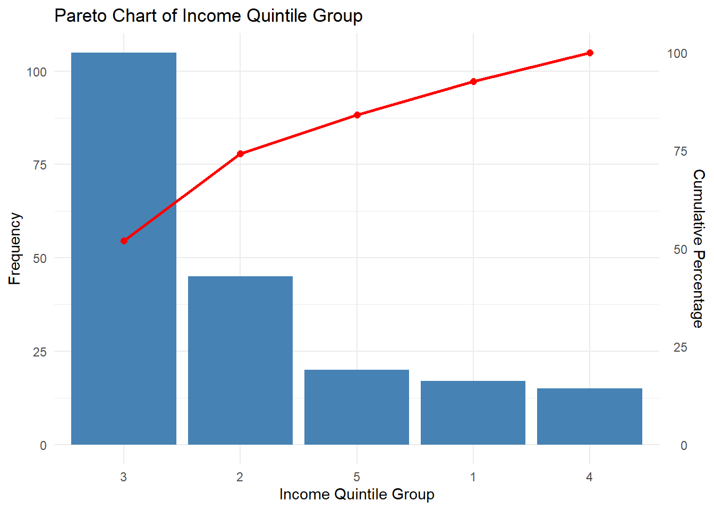

pacman::p_load(tidyverse,ggdist,
ggrepel, ggthemes,
ggridges,patchwork,
scales,colorspace)Take home exercise 01
Topics: Investigating Income of informal labourers from Vietnam northern mountainous region rural area
Overview
Setting the scene:
A survey captures the income levels of informal rural workers along with a range of socioeconomic and demographic characteristics that may influence their earnings. Data were collected across five northern Vietnamese provinces using a structured questionnaire, and after screening, 725 valid responses were retained for analysis. The dataset includes nominal, ordinal, and scale variables that reflect labourer attributes such as education, vocational training.
Our tasks:
In this exercise, Exploratory Data Analysis (EDA) methods and ggplot functions are used to explore:
The income distribution across different genders in the region
A comparison of income levels among different provinces
The income distribution across different race groups
The relationship between income and savings
Differences among different income groups
Get started
Load packages:
We load the following R packages using the pacman::p_load() function:
tidyverse: Core collection of R packages designed for data science
ggrepel: to provides geoms for ggplot2 to repel overlapping text labels
ggthemes: to use additional themes for ggplot2
patchwork: to prepare composite figure created using ggplot2
ggridges: to plot ridgeline plots
scales: provides the internal scaling infrastructure used by ggplot2
ggdist: a ggplot2 extension spacially desgin for visualising distribution and uncertainty
colorspace: an R package provides a broad toolbox for selecting individual colors or color palettes, manipulating these colors, and employing them in various kinds of visualisations.
Import data:
library(readxl)
data1 <- read_excel("data/Upload for elsiver.xlsx")
data1# A tibble: 725 × 30
CPRO CGEN CRAC CJOB CQUI TEIN TAIN TSII TOIN FEDU FVTP FCRA FTAP
<dbl> <chr> <dbl> <dbl> <dbl> <dbl> <dbl> <dbl> <dbl> <dbl> <dbl> <dbl> <dbl>
1 1 1 2 1 3 37 25 7 5 1 1 1 1
2 1 1 2 1 5 25 22 0 3 0 1 2 1
3 1 2 2 3 3 33 25 0 8 1 1 1 2
4 1 1 2 1 3 35 30 5 0 1 1 1 NA
5 1 2 2 1 3 36 28 0 8 0 1 1 2
6 1 2 2 NA 4 21 17 0 4 0 1 1 2
7 1 1 2 3 1 35 25 0 10 3 2 1 2
8 1 1 2 1 3 36 28 0 8 0 1 1 2
9 1 1 2 3 3 38 26 12 0 2 2 1 2
10 1 1 2 1 3 30 22 2 6 0 1 1 2
# ℹ 715 more rows
# ℹ 17 more variables: LHO1 <dbl>, LHO2 <dbl>, LHO3 <dbl>, LHO4 <dbl>,
# LCRE <dbl>, LSAV <dbl>, LWDA <dbl>, PPO1 <dbl>, PPO2 <dbl>, PPO3 <dbl>,
# PPO4 <dbl>, PPO5 <dbl>, ARO1 <dbl>, ARO2 <dbl>, ARO3 <dbl>, ARO4 <chr>,
# ARO5 <dbl>Filtering the data fo selected variables:
we want to reduce the size of the dataset to focus on the variables that would be suitable for this exercise.
data1 <- data1 %>%
select(CPRO, CGEN, CRAC, CQUI,
TEIN, TAIN, TSII, TOIN,
FEDU, LSAV, PPO1, PPO2)
data1# A tibble: 725 × 12
CPRO CGEN CRAC CQUI TEIN TAIN TSII TOIN FEDU LSAV PPO1 PPO2
<dbl> <chr> <dbl> <dbl> <dbl> <dbl> <dbl> <dbl> <dbl> <dbl> <dbl> <dbl>
1 1 1 2 3 37 25 7 5 1 5 5 2
2 1 1 2 5 25 22 0 3 0 NA 2 5
3 1 2 2 3 33 25 0 8 1 30 5 5
4 1 1 2 3 35 30 5 0 1 NA NA NA
5 1 2 2 3 36 28 0 8 0 NA 5 5
6 1 2 2 4 21 17 0 4 0 2 2 4
7 1 1 2 1 35 25 0 10 3 70 5 2
8 1 1 2 3 36 28 0 8 0 NA 5 2
9 1 1 2 3 38 26 12 0 2 25 4 3
10 1 1 2 3 30 22 2 6 0 10 5 1
# ℹ 715 more rowsChanging column names:
The original dataset uses coded values to represent variables, which limits interpretability during analysis. Therefore, the codes were transformed into their corresponding descriptive variable labels to facilitate clearer analysis and interpretation.
colnames(data1)[colnames(data1) == "CPRO"] <- "Provinces"
colnames(data1)[colnames(data1) == "CGEN"] <- "Gender"
colnames(data1)[colnames(data1) == "CRAC"] <- "Race"
colnames(data1)[colnames(data1) == "CQUI"] <- "Income quintile group"
colnames(data1)[colnames(data1) == "TEIN"] <- "Total income"
colnames(data1)[colnames(data1) == "TAIN"] <- "Agricultural income"
colnames(data1)[colnames(data1) == "TSII"] <- "Service and industrial income"
colnames(data1)[colnames(data1) == "TOIN"] <- "Others"
colnames(data1)[colnames(data1) == "FEDU"] <- "Education"
colnames(data1)[colnames(data1) == "LSAV"] <- "Saving"
colnames(data1)[colnames(data1) == "PPO1"] <- "Training Qualification"
colnames(data1)[colnames(data1) == "PPO2"] <- "Supporting Chains for agricultural activities"
data1# A tibble: 725 × 12
Provinces Gender Race `Income quintile group` `Total income`
<dbl> <chr> <dbl> <dbl> <dbl>
1 1 1 2 3 37
2 1 1 2 5 25
3 1 2 2 3 33
4 1 1 2 3 35
5 1 2 2 3 36
6 1 2 2 4 21
7 1 1 2 1 35
8 1 1 2 3 36
9 1 1 2 3 38
10 1 1 2 3 30
# ℹ 715 more rows
# ℹ 7 more variables: `Agricultural income` <dbl>,
# `Service and industrial income` <dbl>, Others <dbl>, Education <dbl>,
# Saving <dbl>, `Training Qualification` <dbl>,
# `Supporting Chains for agricultural activities` <dbl>Check and handle missing value:
Since income is the primary variable of interest in this study, observations with missing values in the income column were treated as invalid and excluded from the analysis. Upon inspection, only one record contained a missing value and was subsequently removed.
data1 <- data1 %>%
filter(!is.na(`Total income`))
data1# A tibble: 724 × 12
Provinces Gender Race `Income quintile group` `Total income`
<dbl> <chr> <dbl> <dbl> <dbl>
1 1 1 2 3 37
2 1 1 2 5 25
3 1 2 2 3 33
4 1 1 2 3 35
5 1 2 2 3 36
6 1 2 2 4 21
7 1 1 2 1 35
8 1 1 2 3 36
9 1 1 2 3 38
10 1 1 2 3 30
# ℹ 714 more rows
# ℹ 7 more variables: `Agricultural income` <dbl>,
# `Service and industrial income` <dbl>, Others <dbl>, Education <dbl>,
# Saving <dbl>, `Training Qualification` <dbl>,
# `Supporting Chains for agricultural activities` <dbl>Check data type of each variable:
Upon examination, the variables Provinces, Race, Income quintile group, Education, Training Qualification, and Supporting Chains for agricultural activities were identified as categorical variables that should be stored as text. However, they were originally recorded as numeric values. To avoid analytical errors arising from incorrect data types, these variables were converted to the appropriate data type prior to further analysis.
str(data1)tibble [724 × 12] (S3: tbl_df/tbl/data.frame)
$ Provinces : num [1:724] 1 1 1 1 1 1 1 1 1 1 ...
$ Gender : chr [1:724] "1" "1" "2" "1" ...
$ Race : num [1:724] 2 2 2 2 2 2 2 2 2 2 ...
$ Income quintile group : num [1:724] 3 5 3 3 3 4 1 3 3 3 ...
$ Total income : num [1:724] 37 25 33 35 36 21 35 36 38 30 ...
$ Agricultural income : num [1:724] 25 22 25 30 28 17 25 28 26 22 ...
$ Service and industrial income : num [1:724] 7 0 0 5 0 0 0 0 12 2 ...
$ Others : num [1:724] 5 3 8 0 8 4 10 8 0 6 ...
$ Education : num [1:724] 1 0 1 1 0 0 3 0 2 0 ...
$ Saving : num [1:724] 5 NA 30 NA NA 2 70 NA 25 10 ...
$ Training Qualification : num [1:724] 5 2 5 NA 5 2 5 5 4 5 ...
$ Supporting Chains for agricultural activities: num [1:724] 2 5 5 NA 5 4 2 2 3 1 ...data1$Provinces <- as.character(data1$Provinces)
data1$Race <- as.character(data1$Race)
data1$`Income quintile group` <- as.character(data1$`Income quintile group`)
data1$Education <- as.character(data1$Education)
data1$`Training Qualification` <- as.character(data1$`Training Qualification`)
data1$`Supporting Chains for agricultural activities` <-
as.character(data1$`Supporting Chains for agricultural activities`)
str(data1)tibble [724 × 12] (S3: tbl_df/tbl/data.frame)
$ Provinces : chr [1:724] "1" "1" "1" "1" ...
$ Gender : chr [1:724] "1" "1" "2" "1" ...
$ Race : chr [1:724] "2" "2" "2" "2" ...
$ Income quintile group : chr [1:724] "3" "5" "3" "3" ...
$ Total income : num [1:724] 37 25 33 35 36 21 35 36 38 30 ...
$ Agricultural income : num [1:724] 25 22 25 30 28 17 25 28 26 22 ...
$ Service and industrial income : num [1:724] 7 0 0 5 0 0 0 0 12 2 ...
$ Others : num [1:724] 5 3 8 0 8 4 10 8 0 6 ...
$ Education : chr [1:724] "1" "0" "1" "1" ...
$ Saving : num [1:724] 5 NA 30 NA NA 2 70 NA 25 10 ...
$ Training Qualification : chr [1:724] "5" "2" "5" NA ...
$ Supporting Chains for agricultural activities: chr [1:724] "2" "5" "5" NA ...Check and remove outliers:
Observations with missing values in the Saving variable were excluded, and the cleaned dataset was stored as data2 for further analysis of the correlation between total income and saving. After addressing missing values, the distribution of the data was examined, and influential outliers that could potentially distort the analytical results were removed prior to conducting the later analysis.
data2 <- data1 %>%
filter(!is.na(Saving))
data2# A tibble: 205 × 12
Provinces Gender Race `Income quintile group` `Total income`
<chr> <chr> <chr> <chr> <dbl>
1 1 1 2 3 37
2 1 2 2 3 33
3 1 2 2 4 21
4 1 1 2 1 35
5 1 1 2 3 38
6 1 1 2 3 30
7 1 1 2 3 58
8 1 2 2 3 11
9 1 2 2 1 95
10 1 1 1 2 33
# ℹ 195 more rows
# ℹ 7 more variables: `Agricultural income` <dbl>,
# `Service and industrial income` <dbl>, Others <dbl>, Education <chr>,
# Saving <dbl>, `Training Qualification` <chr>,
# `Supporting Chains for agricultural activities` <chr>ggplot(data2, aes(y = Saving)) +
geom_boxplot(fill = "skyblue") +
labs(
title = "Boxplot of Saving",
y = "Saving Amount"
) +
theme_minimal()
ggplot(data1, aes(y = `Total income`)) +
geom_boxplot(fill = "skyblue") +
labs(
title = "Total Income",
y = "Total Income Amount"
) +
theme_minimal()
data1 <- data1[data1$`Total income` != 560 &
data1$Saving != 5000, ]
data2 <- data2[data2$`Total income` != 560 &
data2$Saving != 5000, ]EDA 1 Gender-Total_income Pyramid:
pyr <- data1 %>%
filter(!is.na(Gender), !is.na(`Total income`)) %>%
mutate(
income_group = cut(
`Total income`,
breaks = c(0, 50, 100, 150, 200, 250, 300, Inf),
labels = c("0-50","50-100","100-150","150-200","200-250","250-300","300+"),
include.lowest = TRUE
)
) %>%
count(income_group, Gender) %>%
mutate(income_group = factor(income_group, levels = rev(levels(income_group))))one_df <- pyr %>% filter(Gender == "1")
two_df <- pyr %>% filter(Gender == "2")
p_one <- ggplot(one_df, aes(x = n, y = income_group)) +
geom_col() +
scale_x_reverse() + # mirror to the left
labs(x = NULL, y = NULL, title = "Gender_1") +
theme_minimal() +
theme(
plot.title = element_text(hjust = 0.5),
axis.text.y = element_blank(), # hide y labels on left panel
panel.grid.major.y = element_blank()
)
p_two <- ggplot(two_df, aes(x = n, y = income_group)) +
geom_col() +
labs(x = NULL, y = NULL, title = "Gender_2") +
theme_minimal() +
theme(
axis.text.y = element_text(), # keep y labels in middle/right
panel.grid.major.y = element_blank()
)
# Combine side-by-side with a main title
(p_one | p_two) +
plot_annotation(title = "Sex–Income Pyramid")
The original dataset does not explicitly define the categories Gender_1 and Gender_2. Nevertheless, based on the observed graphical patterns and the socioeconomic context of the survey—conducted in rural areas of the northern mountainous region of Vietnam—it is reasonable to infer that Gender_1 likely corresponds to males and Gender_2 to females. A substantial proportion of respondents fall within the 0–50 income range, comprising more than half of the total sample. Furthermore, across all income groups, the male population appears to be approximately three times or more than the female population.
EDA 2:Distribution of Total Income Across Provinces
ggplot(data1,
aes(x = `Total income`,
y = Provinces,
fill = 0.5 - abs(0.5-stat(ecdf)))) +
stat_density_ridges(geom = "density_ridges_gradient",
calc_ecdf = TRUE) +
scale_fill_viridis_c(name = "Tail probability",
direction = -1) +
theme_ridges()Warning: `stat(ecdf)` was deprecated in ggplot2 3.4.0.
ℹ Please use `after_stat(ecdf)` instead.Picking joint bandwidth of 9.21Warning: Removed 519 rows containing non-finite outside the scale range
(`stat_density_ridges()`).
This ridgeline density plot illustrates the distribution of total income across different provinces. Across all provinces, income is heavily concentrated in the lower income range (approximately 0–80), indicating that most individuals earn relatively low incomes.The distributions are positively skewed, with a long right tail extending toward higher income levels. This suggests that a small number of individuals earn substantially higher incomes. Although slight variations exist, the general income distribution pattern appears relatively similar across provinces, implying limited regional disparity in income structure.
EDA 3:Comparison of Total Income Distribution by Race
ggplot(data1,
aes(x = Race,
y = `Total income`)) +
stat_halfeye(adjust = 0.5,
justification = -0.2,
.width = 0,
point_colour = NA) +
geom_boxplot(width = .20,
outlier.shape = NA) +
stat_dots(side = "left",
justification = 1.2,
binwidth = .5,
dotsize = 1.5) +
coord_flip() +
theme_economist()Warning: Removed 519 rows containing missing values or values outside the scale range
(`stat_slabinterval()`).Warning: Removed 519 rows containing non-finite outside the scale range
(`stat_boxplot()`).Warning: Removed 519 rows containing missing values or values outside the scale range
(`stat_slabinterval()`).
This plot combines density ridgelines with boxplots to compare the distribution of total income across racial groups. For both racial groups, income is heavily concentrated in the lower income range (roughly below 60–80), indicating that most individuals earn relatively modest incomes.The income distributions are positively skewed, with long right tails. This suggests the presence of a small number of high-income individuals in both groups.Overall, the income distribution patterns between the two racial groups appear broadly similar, with only minor variations in spread and upper-tail dispersion.
EDA 4:Income and Saving Patterns: Distribution and Relationship Analysis
p1 <- ggplot(data=data2,
aes(x = Saving)) +
geom_histogram(bins=20,
boundary = 500,
color="grey25",
fill="grey90") +
coord_cartesian(xlim=c(0,500)) +
ggtitle("Distribution of Saving")p2 <- ggplot(data=data2,
aes(x = `Total income`)) +
geom_histogram(bins=20,
boundary = 300,
color="grey25",
fill="grey90") +
coord_cartesian(xlim=c(0,300)) +
ggtitle("Distribution of total income")p3 <- ggplot(data=data2,
aes(x= Saving,
y=`Total income`)) +
geom_point() +
geom_smooth(method=lm,
size=0.5) +
coord_cartesian(xlim=c(0,500),
ylim=c(0,300)) +
ggtitle("Saving versus Total income")Warning: Using `size` aesthetic for lines was deprecated in ggplot2 3.4.0.
ℹ Please use `linewidth` instead.((p1 / p2) | p3) +
plot_annotation(tag_levels = 'I')`geom_smooth()` using formula = 'y ~ x'
This figure presents three panels examining the distribution of saving, the distribution of total income, and the relationship between saving and total income. Both saving and total income exhibit strongly right-skewed distributions, suggesting that the majority of individuals fall within the lower income and savings ranges, while only a small proportion earn or save substantially higher amounts. The scatter plot with regression line shows a positive relationship between saving and total income.However, the points are widely dispersed, suggesting variability and that income does not fully determine saving behavior.
EDA 5:Pareto Analysis of Income Quintile Distribution
pareto_data <- data1 %>%
filter(!is.na(`Income quintile group`)) %>%
count(`Income quintile group`) %>%
arrange(desc(n)) %>% # sort from largest to smallest
mutate(
cumulative = cumsum(n),
cumulative_pct = cumulative / sum(n) * 100
)ggplot(pareto_data, aes(x = reorder(`Income quintile group`, -n))) +
geom_col(aes(y = n), fill = "steelblue") +
geom_line(aes(y = cumulative_pct * max(n) / 100, group = 1),
color = "red", size = 1) +
geom_point(aes(y = cumulative_pct * max(n) / 100),
color = "red", size = 2) +
scale_y_continuous(
name = "Frequency",
sec.axis = sec_axis(~ . / max(pareto_data$n) * 100,
name = "Cumulative Percentage")
) +
labs(
title = "Pareto Chart of Income Quintile Group",
x = "Income Quintile Group"
) +
theme_minimal()
This Pareto chart presents the frequency distribution of respondents across income quintile groups, along with the cumulative percentage. The first two most frequent quintile groups (3 and 2) together account for a substantial portion of the population, as indicated by the steep rise in the cumulative percentage line.The cumulative percentage line shows that a small number of income groups account for the majority of the population, consistent with the Pareto principle.
Summary and Conclusion
The analysis reveals that both total income and saving are highly right-skewed, with most individuals concentrated in the lower income and saving ranges and only a small number of high-value outliers.
A positive relationship between income and saving is observed, indicating that individuals with higher income tend to save more, although considerable variability suggests other influencing factors. Income distributions across provinces show broadly similar patterns, with limited regional disparity. The Pareto analysis highlights that a few income quintile groups account for a substantial share of the population, reflecting structural concentration within certain income levels. Finally, the sex–income pyramid indicates a pronounced gender imbalance across income groups, with one gender significantly outnumbering the other, particularly in the lowest income bracket.
Overall, the findings suggest generally low income levels and unequal distribution within the surveyed rural northern Vietnam region.
Reference
datasource:https://www.sciencedirect.com/science/article/pii/S235234092100576X
Pareto chart:https://en.wikipedia.org/wiki/Pareto_chart
Age-sex and population pyramid:https://www.thoughtco.com/age-sex-pyramids-and-population-pyramids-1435272